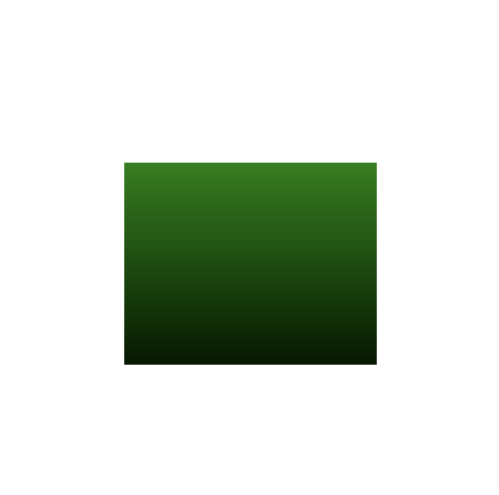

Klausur: Computergrafik
Ende SoSe 2026
Aufgabe
Bitte lösen Sie die folgende Aufgabe als GLSL Fragment Shader.
Kopien Sie Ihre Lösung anschließend bitte als Antwort in den Lernraum-Test hinein.
- Normalisieren Sie die Fragment-Koordinaten
- Zeichnen Sie ein Rechteck
- Das Rechteck soll über Variablen konfigurierbar sein:
- 2D-Koordinaten der oberen, linken Ecke
- Breite
- Höhe
- Es soll ein grüner, vertikaler Farbverlauf gezeichnet werden, der nur innerhalb des Rechtecks sichtbar ist
- Die Hintergrundfarbe soll einstellbar sein.
- Sorgen Sie dafür, dass der Farbverlauf gleich bleibt, wenn das Rechteck auf der Zeichenfläche verschoben wird
Das Ergebnis soll in etwa wie folgt aussehen:
